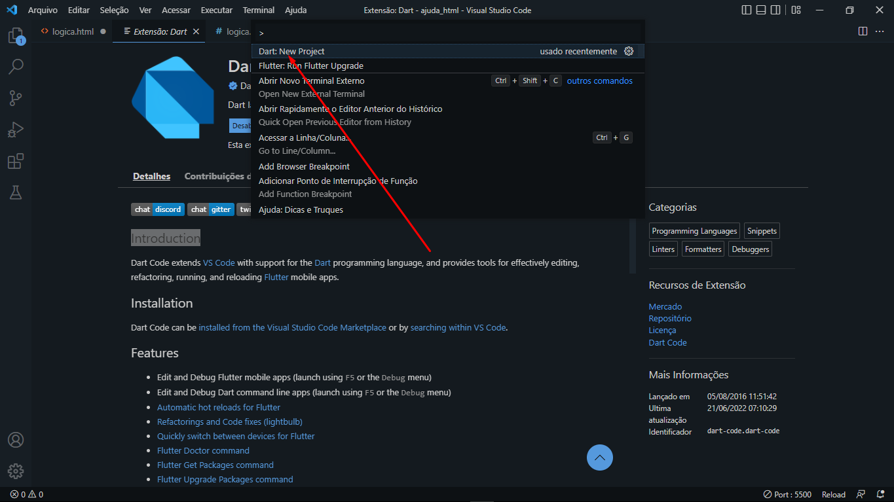

Lógica de Programação
Cada pessoa define uma sequência de passos para fazer um bolo, podendo incluir ou remover alguns já definidos. Essa lógica é aplicada a qualquer coisa que fazemos diariamente e muitas das vezes não nos damos conta.
Em atividades rotineiras, não costumamos prestar atenção quando seguimos uma mesma ordem para executar tarefas. Porém, quando o assunto é programar, definir as etapas do que deve ser feito assume uma grande importância, uma vez que instruir um computador ainda é bem diferente do que instruir uma pessoa.
A lógica é a mesma para todas as linguagens de programação, mas existem algumas que são mais fáceis, como o Portugol e o Dart, que é a que eu utilizo. Um dos programas mais utilizados pelos programadores para a realização da linguagem é Visual Studio Code, que alem de fácil utilização, possui diversas extenções e já te ofereceo template básico pronto.
Algumas extenções quase obrigatórias são:
- Dart: é o suporte de linguagem, te danto atalhos e formas de criação do arquivo.
- Flutter: também faz o suporte e ofereceo debugger.
- Awesome Flutter Snippets: Awesome Flutter Snippets é uma coleção de trechos e atalhos para o Flutter comumentes usados.
Como criar um novo arquivo
-
Com o Visual Studio Code aberto, você clicará na engrenagem no canto inferior esquerdo:
-
Despois selecionará a opção "Paleta de Comandos...":
-
E então a opção "Dart: New Project"
 -
Em seguida vá em "Console Application" ou em "Simple Console Application":
-
E você pode escolher o lugar onde deseja salvar o seu arquivo, recomendo a criação de uma pasta para organização ou colocar na área de trabalho para fácil acesso.
-
Tens a possibilidade de nomear o arquivo com o nome que deseja, o recomendado é que você não utilize espaço e letra maiúscula no início do nome.